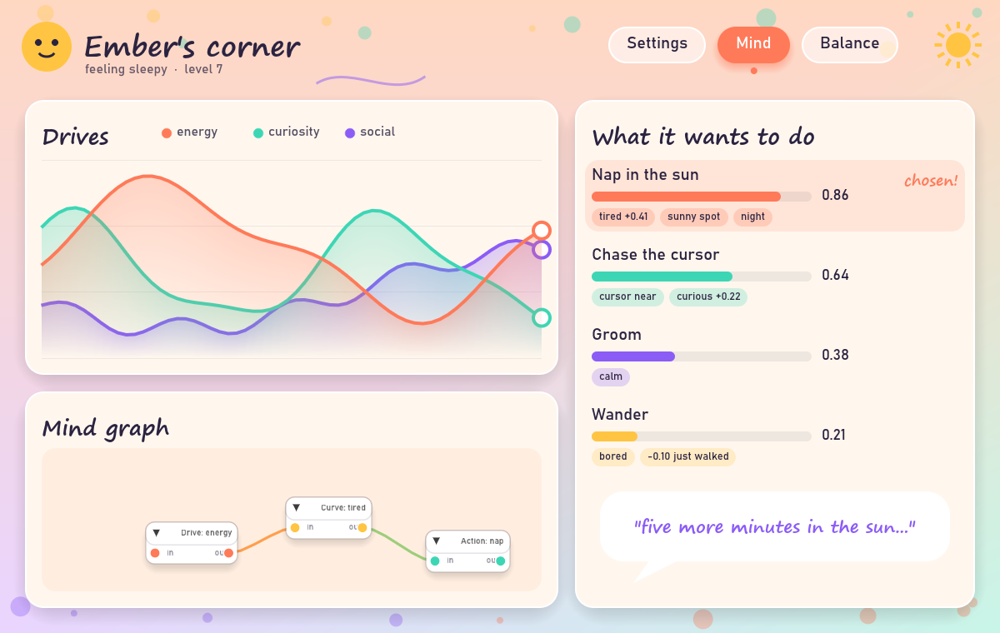
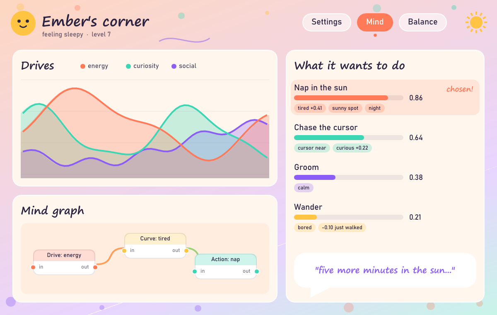
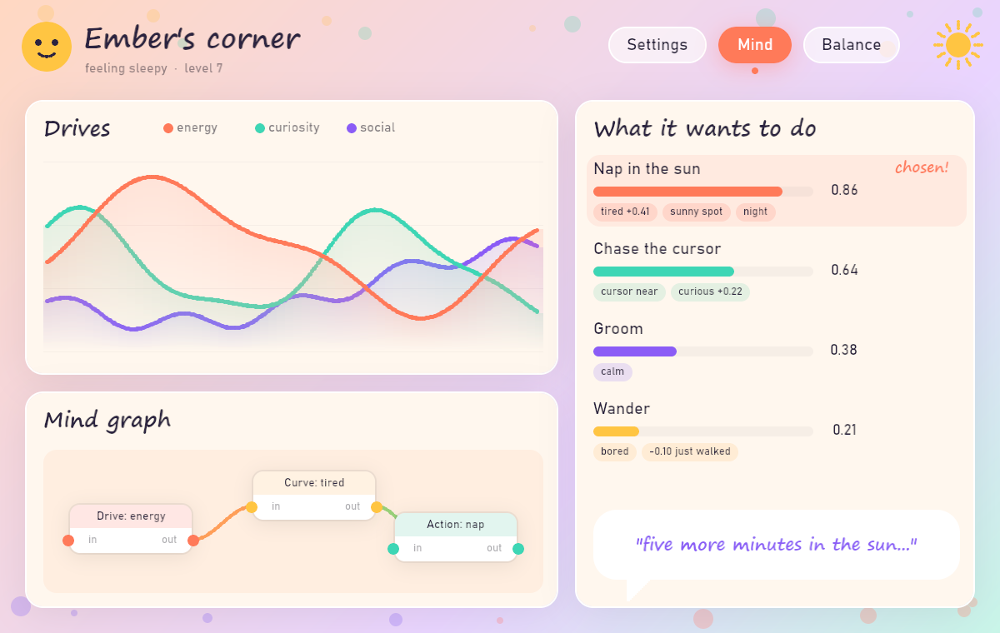

Pet panel: the same screen in four UI technologies
Same layout, palette and fonts (Bahnschrift and Segoe Print, which ship with Windows) in each. Every picture was
rendered offscreen, with no window and no screenshot. The HTML one is live: it animates and you can drag its nodes. Details and
costs are in ../dev-panel.md, under "Visual options".
HTML / CSS / Canvas (as in a WebView2 window)
Live: the chart scrolls, the face blinks, the wires flow, the cards spring in, and the nodes drag.
Easiest place to be creative: CSS animations and transitions, gradients, SVG, Canvas and WebGL.
Costs about 87 MB of RAM while open (measured), and it means writing HTML and JS.

egui 0.36 (custom painted) + egui-snarl
Rendered with egui_kittest over wgpu. The chart, chips, face and gradient are all hand-painted shapes.
The node graph is a real, working egui-snarl widget, restyled.
Animation means writing per-frame code: there are no CSS-like transitions, and animate_value is the main helper.

Slint 1.18 (declarative .slint markup)
Rendered with Slint's software renderer into a buffer. Layout, shadows and chips come from markup, and Path draws the curves.
The software renderer drew the path gradients flat, and it ignored transform-rotation on rectangles. Slint's GPU renderers support more.
Has animate, states and transitions, plus live preview in VS Code and a Figma plugin. There's no ready-made node graph.

bevy_ui 0.20 (separate Bevy program)
Rendered into an image the way the repo's windowless render tests do it. It uses gradients, box shadows and rounded nodes.
bevy_ui can't draw paths. The lines here are chains of tiny round nodes, and real curves would need a UiMaterial shader.
Shaders give it the most game-like ceiling, but every widget is yours to build. There's no node graph.